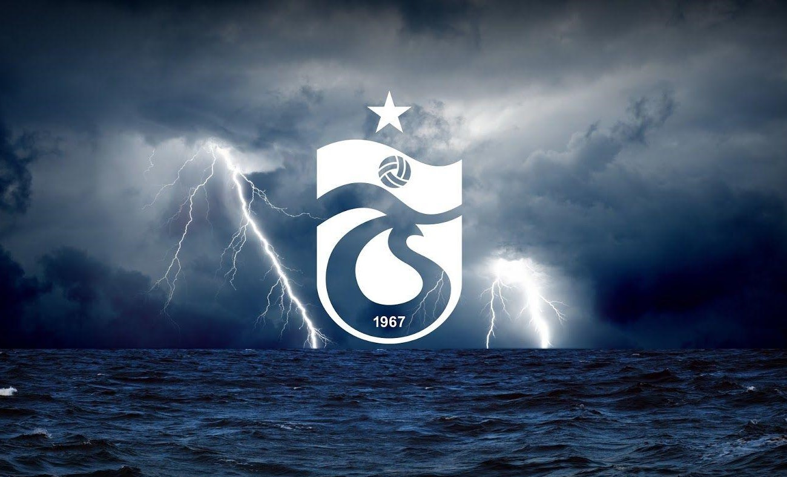

Trabzonspor
Trabzon'un insanıyla, kolbastıyla, bordo-mavi ile, kısacası Trabzon Şehriyle bütünleşen,
2 Ağustos 1967'de kurulan ve lige fırtına gibi girip ard arda şampiyonluklar yaşayan
Trabzonspor, Türkiye merkezli spor kulübüdür. Özellikle futbol şubesiyle tanınan kulüp, profesyonel futbol
ligleri tarihinde şampiyon olan 6 kulüpten biri ve şampiyon olmayı başaran
ilk Anadolu kulübüdür. Kulübün başkanlığını Ertuğrul Doğan yapmaktadır. tarihinde kıbrısın barış kupası da
dahil olmak üzere bir çok başarısı bulunan Trabzonspor, uzun sürelik şampiyonluk hasretine 2022 yılında son vermiş
ve yeniden süperlig şampiyonu olmuştur.